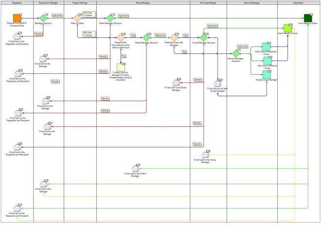
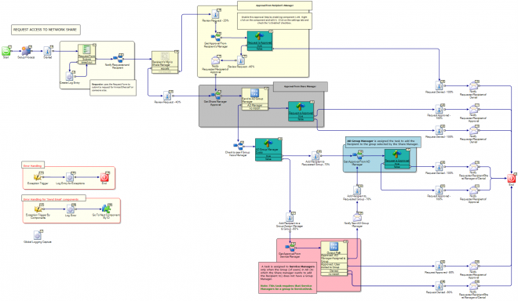
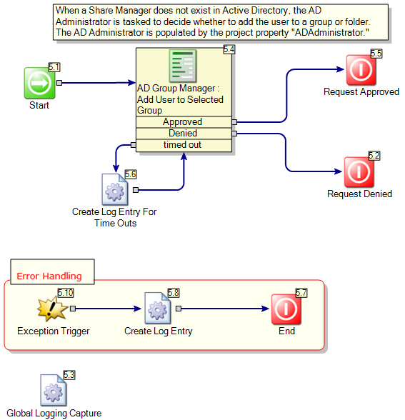
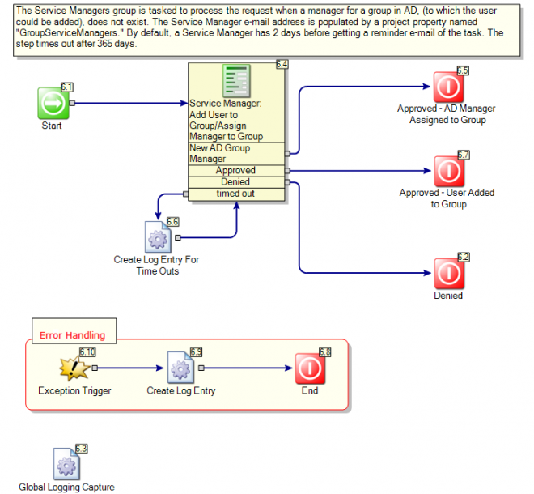
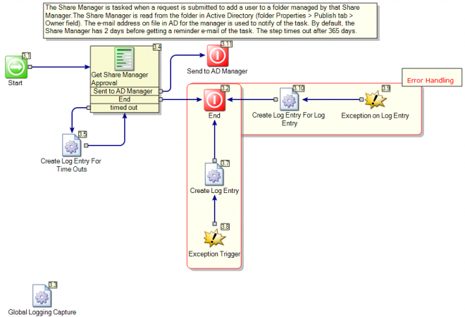

Request Access To Network Share

Name
Symantec.Workflow.RequestAccessToNetworkShare
Type
Workflow
Description
This process will enable the user to request access/permissions to a shared drive. The requester can request for himself/herself or someone else. By default, the request is initially sent to the Share Manager for approval. (However, the recipient's manager can receive an approval step first; this step is disabled out of the box.) On approval from the Share Manager, the recipient is granted access to the shared folder. The Share Manager can also add the user to a group that has permission on that folder. If this is decided, the group manager receives an approval task for the request. If a group does not have a manager, as set in AD, the Service Managers group receives the task and can either add the user to the group, select a different group, or assign a manager to the group. If a new manager is assigned, that manager receives the original task to approve the addition of the new user; all subsequent tasks for this group will be handled by the new manager.
Author mail:
nancy_mitchelmore@symantec.com
Process Prefix: "ITSR-"
Documentation
| Process Structure
This process is structured to include an approval process and is dependent upon date from the Active Directory. In order for the recipient to receive access, he/she must be approved by the share folder’s owner as well as the group manager (if one a group exists). If at any time a folder owner does not exist, the request will be routed to the AD Administrator. If a group manager does not exist, the request will be routed to the Service Managers group.
The process is composed of three (3) main forms – the Request Form (where the requester can request for himself/herself or someone else), an Approval form (for the folder’s owner) and an Action form, (for the group manager). An email notification is sent out to the requester and recipient upon resolution. Another email notification is sent out to the requester, recipient and the manager upon completion. In reviewing the workflow, you will see components such as the Dialog Workflow, the Form Builder, the Terminating Form Builder, Set Process State/Status, Add Process Contact, and Send Email. |
| --- |
Business Model

Primary

| The roles significant to this process are the Share Managers (owner of the Active Directory folder), AD Administrator, Group Managers (manager of an AD group), and the recipient’s manager, should manager approval be desired.
This process includes an approval process and is dependent upon data from Active Directory (AD). A user can gain access to an AD folder two ways: 1) approval by the share manager (folder’s owner) for access to the folder, 2) recommendation by the share manager to join a group that has permission to the folder, then approval by the group manager.
If at any time a folder owner does not exist, the request will be routed to the AD Administrator. If a group manager does not exist, the request will be routed to the Service Managers group.
The process is composed of three (3) main forms – the Request Form (where the requester can request for himself/herself or someone else), an Approval form (for the folder’s owner), and an Action form, (for the group manager). E-mail notification is sent out to the requester and recipient upon resolution. Another e-mail notification is sent to the requester, recipient, and the manager upon completion.
The process starts by browsing to the Network Share Request Form. The user may request access to a shared folder for himself/herself, or for someone else. When requesting for someone else, the Search for User link is available on the form. This may be applicable in situations where a user cannot access the form and has to ask another user to submit his/her request. The person for whom the request is submitted becomes the recipient. The requester must select a shared folder, the type of permission requested for the shared folder, and the date required. Additionally, a reason must be provided for the request. The image below shows the Interaction Setup of the main Dialog Workflow. The requester information is stored in a global variable.
Customization
Currently, this process bypasses the recipient’s manager approval. This can be enabled by editing the True/False component (#1.49):
- Right Click on component #1.49
- Choose Edit Component
- Navigate to the Settings Tab
- Check “Is Enabled”
Get Approval From AD Manager

| Step 3: Group Manager Approves/Denies the request
If the folder’s owner chooses to add a user to a group, the group’s manager* will be tasked with handling the request. At this time, the group’s manager may approve or deny the request. If approved, the user is added and the process completes.
*NOTE: if a group does not have an associated manager, the Service Managers will be tasked instead. |
| --- |
Get Approval From Service Manager

| Step 4: Service Manager Approves/Denies the request
In the event the selected group does not have an associated manager, the Service Manager is tasked to determine how to handle the request. At this time, the Service Manager may choose to add the user to the requested group, select another group, or assign a manager to the group. If a manager is assigned to the group, then he/she will receive a task as described in step 3. Otherwise, the user will be added to the selected group. |
| --- |
Get Manager Approval

| Step 2: Share Folder’s Owner Approves/Denies the request
The share folder’s owner* is tasked to decide how to handle the request. At this time, he/she may choose to request the user be added to a group that has access to the shared folder, or simply add the user to the folder. If folder’s owner decides to add the user to a group, the group’s manager must approve this selection as well (which happens next in the process). If the folder’s owner decides to add the user to the folder, the user is added and the process completes.
*NOTE: if a share folder does not have an associated owner, the AD Administrator will be tasked instead. |
| --- |
Get Approval From Requester's Manager

| Customization
In the event the requester is not the recipient's manager, you may want to require manager approval. Currently, this step is bypassed. This can be enabled by editing the Text Equals component (#1.49):
- Right Click on component #1.49
- Choose Edit Component
- Navigate to the Settings Tab
- Check “Is Enabled”
Critical Errors

Properties
| Name | Category | Value | Description |
|---|---|---|---|
| SMTPServer | localhost | ||
| GroupServiceManagers | ServiceManagers@symantec.com | ||
| ADAdministrator | ADAdmin@symantec.com | ||
| ErrorContactName | Error Admin | ||
| ErrorContactInfo | ErrorAdmin@symantec.com | ||
| MailFromAddress | no-reply@symantec.com |
AD Credentials and Config too
Global Data
| Name | Type | Value |
|---|---|---|
| Requester | User | LogicBase.Core.Ensemble.UserMan.User |
| AddUserToShare | Logical (true/false) | False |
| Token | ProxySecurityToken | Contains Anonymous Authentication Credentials |
| CurrentStatus | Text |
Toomas wrote an Article about the other Project.
[Install Drive]:\Program Files\Symantec\Workflow\WorkflowProjects
- SD.RequestAccessToNetworkShare.package
What do I need to know about Request Access To Network Share in ServiceDesk 7.5/7.5 SP1?
https://www.symantec.com/connect/articles/what-do-i-need-know-about-request-access-network-share-servicedesk-7575-sp1
Documented on Connect by: